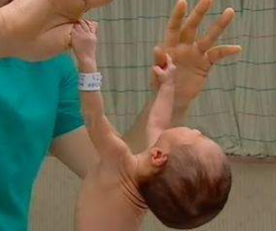
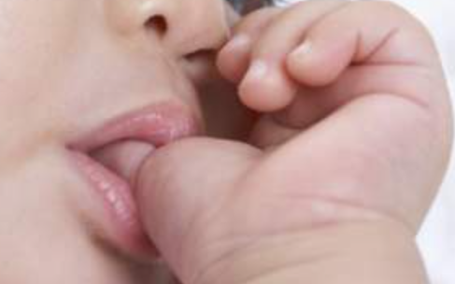
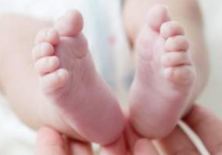
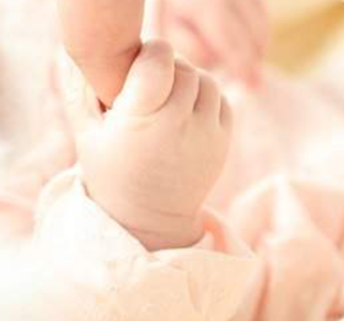

신생아의 반사(reflex)행동은 생존하는데 필수적인 요건이다. 반사행동은 발달단계에서 자신을 보호하고 자발적인 신체의 기능 향상과 직접적인 관련이 있다. 특히, 반사행동은 뇌간(brainstem)에 의해 통제되는 무의식적 운동이기 때문에 중추신경계의 신경학적 정상 여부를 평가하는 자료로 활용한다. 신생아 반사행동은 생존반사와 원시반사로 구분한다.

생존반사 : 대뇌피질의 신경학적 소중한 능력
생존반사(survival reflexes)는 영아의 생존이나 보호와 직결되는 적응을 위한 반사이다. 이러한 반사는 어떤 특정 자극에 대한 반응으로서 예측이 가능하며 학습이 되지 않은 자동적이며 비의도적인 반응이다. 생존반사의 종류는 빨기반사, 삼키기반사, 근원반사, 순목반사, 재채기,・기침 반사, 하품반사 등에 대하여 간략하게 알아보고자 한다.
1. 빨기반사
빨기반사(sucking reflex)는 신생아들이 구강 자극에 민감하여 입에 닿는 것은 무엇이든지 빨려고 하는데 이것을 흡입반사라고도 한다. 근원반사와 마찬가지로 3~4개월 이후에 사라지며, 이후부터는 의식적으로 빨게 되는 행동으로 대치된다.

2. 삼키기반사
삼키기반사(swallowing reflex)는 입속에 들어간 것은 무엇이든 삼키는 반사로 연하반사라고도 한다. 수유하는 기능을 돕고, 일생동안 지속적으로 활용되는 반사능력이다.
3. 근원반사
근원반사(rooting reflex)는 신생아의 입 주위에 자극을 주면 그 자극을 향해 고개를 돌리고, 입을 벌려 무언가를 빨려고 하는 행동을 한다. 생후 3~4개월 이후에 사라진다. 빰 부분에 자극물을 대면 자극물을 필사적으로 찾는다.
4. 순목반사
순목반사(blink reflex)는 신생아에게 밝은 빛을 비추기, 입김 불기, 손뼉을 치는 등 갑작스런 자극을 주면 눈을 깜박거려 보호한다. 이 반사는 찾기반사나 빨기반사와 달리 성인기까지 계속되는 영구적인 반사 행동이다.
5. 재채기・기침반사
재채기반사(sneezing reflex), 기침반사(coughing reflex)는 이물질이 코에 들어가면 재채기 또는 기침을 하는 반응이다. 재채기와 기침은 공기가 분명히 폐로 들어간다는 표시이며, 평생동안 지속되는 반사이다.
6. 하품반사
하품반사(yawning reflex)는 공기가 필요할 때 공기를 들이마시기 위해 자발적으로 입을 벌리게 된다. 이 반사는 산소를 공급하는 기능으로 일생동안 지속된다.
원시반사 : 생후 초기 특정 시기의 운동기능 발달
원시반사(primitive reflexes)는 생존과 관계없이 진화의 흔적을 나타내며 비생존반사라고도 한다. 이 반사는 대뇌피질이 발달함에 따라 반사운동이 의식적이고 자발적인 행동으로 대체되기 때문에 대부분 수개월 이내에 사라진다.
1. 모로반사
모로반사(Moro reflex)는 모로(Moro)가 발견한 반사로, 생후 1주일 정도에서 보이기 시작하다가 6개월 이후 사라진다. 신생아를 놀라게 하거나 안고 있다가 내려놓으면 팔이 활 모양으로 휘는 행동을 한다. 똑바로 눕힌 채 놀랄 만한 자극을 주면 머리를 뒤로 젖히고 팔다리를 벌림과 동시에 손가락을 쫙 벌리다가 두 손을 다시 가슴에 모으는 행동을 한다.
2. 바빈스키반사
바빈스키반사(Babinski reflex)는 발바닥의 오목 들어간 부분을 살짝 건드리면 발가락 다섯 개를 부챗살처럼 폈다가 다시 오므린다. 바빈스키(Babinski)가 발견한 행동반사로 생후 6개월 이후부터 서서히 없어지다가 12개월이면 사라진다.

3. 수영반사
수영반사(swimming reflex)는 신생아를 물 속에 넣고 배 부분을 수평으로 받쳐주면 물 위에 뜨기 위해 팔과 다리를 교대로 움직인다. 생후 4~6개월에 사라지는 능력으로 물속에 빠졌을 때 생존하게 해 주는 기능이다.
4. 잡기반사
잡기반사(grasping reflex) 또는 파악반사는 손바닥에 어떤 물건을 쥐어주면 그것을 빼내기 힘들 정도로 움켜쥐는 현상이다. 물체를 쥐는 힘은 1개월 이후 점차 약해진 후 3~4개월 경에는 의도적인 잡기행동으로 대치된다.

5. 걸음마반사
걸음마반사(stopping reflex)는 걷기반사라고도 한다. 신생아의 겨드랑이를 두 손으로 잡고 바닥에 발을 닿게 하고 세우면 마치 걸어가듯이 무릎을 구부려 발을 번갈아 움직인다. 2~3개월이면 사라지고 걷는 능력을 준비하는 반사이다.
6. 무릎반사
무릎반사(knee–ejerk reflex)는 무릎을 직각으로 굽히고 종아리가 자유로이 흔들리는 상태로 의자에 앉힌 후 무릎뼈(슬개골) 아래를 가볍게 두드리면 다리가 앞쪽으로 튕기듯이 무릎을 뻗는다. 근육질환이 있는 경우 반응이 나타나지 않고, 지나치게 흥분할 경우 과장 반응으로 지속적으로 나타난다.
7. 긴장성 목반사
긴장성 목반사(tonic neck reflex)는 펜싱반사(fencing reflex)라고도 한다. 머리를 한쪽으로 뉘어 놓으면 마치 펜싱을 하듯 얼굴이 향한 쪽의 팔을 쭉 뻗고 반대쪽의 팔을 구부린다. 이 반사는 출생했을 때 나타나고 4~5개월경에 사라진다.
권순황, 선애순,이형선(2015), 영아발달. 양서원
김영애, 선애순, 정효정(2018). 영유아발달. 양서원
박성연(2010). 아동발달. 교문사
2022.03.31 - [분류 전체보기] - 감각은 두뇌발달과 밀접한 관계, 신통방통 인지능력
감각은 두뇌발달과 밀접한 관계, 신통방통 인지능력
감각(sensation)은 신체자극이 감각기관을 통해 부여하는 지각(perception)이라고 한다. 감각능력(sensibility)은 출생 전부터 발달하기 시작하여 출생 후 환경에서 다양한 경험을 통하여 발달한다. 출샌
think-sis.co.kr